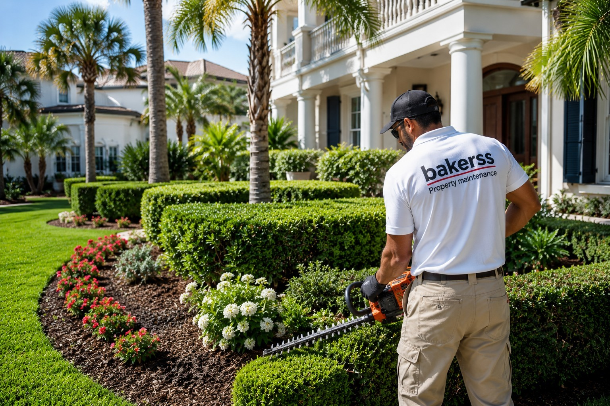

Landscaping in Myrtle Beach, Murrells Inlet & Horry County, SC
Full landscaping design, installation, and maintenance for coastal properties. Salt-tolerant plants, garden bed care, sandy soil solutions, and seasonal cleanup across Horry County.

Silo: Exterior Maintenance
Landscaping for Coastal Horry County Properties
Landscaping along the South Carolina coast is a different discipline than inland work. Sandy, nutrient-poor soil, salt spray, high humidity, and intense summer heat mean most standard plants and techniques fail. Coastal Horry County landscaping requires salt-tolerant species, proper soil amendments, and a maintenance plan built for the Grand Strand's climate.
Bakerss provides landscaping services specifically tuned to Myrtle Beach and surrounding communities — from fresh landscape installation for vacation rentals to recurring garden bed maintenance for second homes and primary residences. Our team knows what thrives on the coast and what doesn't.
What Our Landscaping Service Includes
- ✓ Landscape design and layout planning for coastal properties
- ✓ Garden bed installation and edging
- ✓ Salt-tolerant plant selection and installation
- ✓ Sandy soil amendment and enrichment
- ✓ Seasonal planting and color rotations
- ✓ Mulching and bed refresh
- ✓ Weed control and bed maintenance
- ✓ Irrigation coordination and plant placement
- ✓ Post-storm landscape cleanup and restoration
Coastal Considerations in Horry County
- ✓ Sandy soil — nutrients drain fast in coastal soil; proper amendments are critical for healthy plants
- ✓ Salt spray — plants within several blocks of the ocean must tolerate salt air or they'll die
- ✓ High humidity — fungal issues are common without proper plant spacing and airflow
- ✓ Storm damage — tropical weather events regularly require landscape restoration
Combine Landscaping With These Exterior Services
Keep your property completely maintained with these complementary services — all from one vendor:
🌿 Lawn Care
Combine landscaping with recurring lawn mowing and edging for a fully maintained exterior.
View Lawn Care →✂️ Bush Trimming
Keep your landscape looking sharp with professional hedge and shrub trimming.
View Bush Trimming →💧 Pressure Washing
Pair clean landscape beds with pressure-washed driveways and patios for maximum curb appeal.
View Pressure Washing →🏠 Gutter Cleaning
Schedule gutter cleaning with landscaping for complete exterior maintenance.
View Gutter Cleaning →Landscaping by Location
Landscaping Across Horry County — By City
Landscaping in Myrtle Beach, SC
Myrtle Beach's dense vacation rental market and salt air environment demand landscaping with coastal-adapted plants and consistent bed maintenance. We provide full landscape services for beachfront and second homes.
Myrtle Beach Services →Landscaping in Murrells Inlet, SC
Murrells Inlet marshfront properties require plants that tolerate both salt air and occasional flooding. Our landscaping plans factor in the unique waterfront conditions of this community.
Murrells Inlet Services →Landscaping in Surfside Beach, SC
Surfside Beach — The Family Beach — has a mix of permanent residents and vacation rentals. We provide landscaping that enhances curb appeal and survives the coastal growing season.
Surfside Beach Services →Landscaping in Garden City, SC
Garden City oceanfront properties face high salt exposure. We select and maintain plants that thrive in this demanding coastal micro-climate for lasting landscape results.
Garden City Services →Landscaping in Horry County, SC
From the Grand Strand to inland Horry County, we provide landscaping services built for the varied conditions across the county — sandy soil, coastal salt air, and sub-tropical humidity.
Horry County Services →Common Questions
Landscaping FAQ — Myrtle Beach & Horry County
Get Professional Landscaping in Myrtle Beach Starting at $75
Serving Myrtle Beach, Murrells Inlet, Surfside Beach, Garden City, and all of Horry County. Veteran owned. Licensed & insured. One call for your entire exterior.